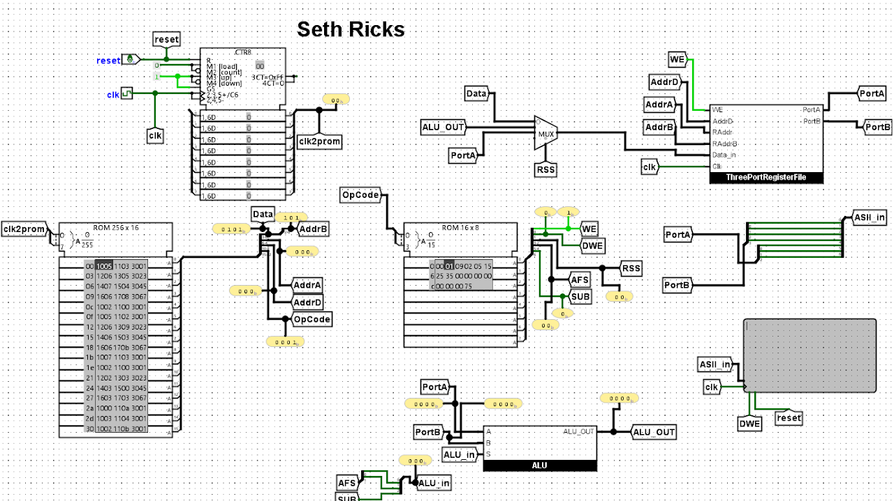
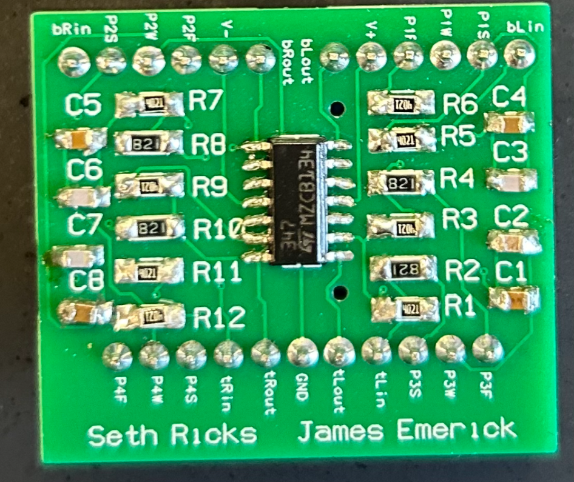

Work Projects

Auxiliary Trigger System
(May 2026 - July 2026)
• Created complex LabVIEW auxiliary trigger system for wind tunnel imaging
• Programmed low-level cRIO/FPGA VI logic to generate 30 precise, configurable waveforms simultaneously
• Authored comprehensive 30-page technical document to guide system operation and user modifications

Active Cooperative Terrain-Aided Navigation Using Inverted USBL; Base Station GUI
(May 2025 - July 2025)
This project was for my internship at the FRoSt Lab. The goal of the project was to have a multi-agent fleet navigating autonomously together, communicating over modem and estimating position based off of differences in the terrain. My specific assignment was to create a GUI for the base station, because when I arrived everything was operating from terminal. Now with the GUI we can see the status of the vehicles while they are in the mission, including location data and system status. This is done by communicating through a base station modem near the shore and connected to the base station computer.
GUI source code: here.
GUI documentation: here.
Personal Projects

Interactive Dueling Wand Game
(September 2025 - December 2025)
I created Interactive Dueling Wands, which are a lot like laser tag.
Each wand has an accelerometer, an RGB LED, a TFT LCD, a button, and a rechargeable battery. There is also a Goblet, which acts like the base station. It sends out a starting signal to the wands, along with a timer for how long a game will be.
There are 9 spells each wand can cast, which are combinations of roll, pitch, and yaw motions, recorded by the accelerometer. When a spell is cast successfully during a game, it is sent out to all the other wands in the area using ESP-NOW.
Each spell affects wands in various ways, such as stunning yourself or opponents, adding or subtracting points, or shielding yourself or others.
I designed a custom PCB for each wand in KiCad, including custom footprints and precise dimensions to fit inside the wand case. This was by far my favorite project so far!
Wand Source code: here.
Cat Companion
(April 2026)
I created a cute desktop companion cat that walks around the screen, finds horizontal lines, and loafs on them. I developed an image-processing algorithm that takes screenshots, identifies the major colors, converts them into black-and-white pixels, and detects horizontal edges. The cat then randomly selects one of these lines, walks over to it, and loafs.
Cat source code: here.
Autonomous Chessboard V2
(May 2025 - Sept 2025)
I decided to take my second attempt at the Autonomous Chessboard in a different direction. My idea was a rack and pinion rotating on a plate. Both the center gear and the rotating plate are attached to rotary encoders, which communicate with an Arduino Nano. A Raspberry Pi commands the Nano, telling the electromagnet what coordinates to go to. Although I didn't reach nearly the level of functionality I hoped to, I learned a lot.
Chess V2 source code: here.
Autonomous Chessboard V1
(Feb 2024 - March 2025)
The board consists of two motors for the x and y directions, which spun threaded rods. Through this spinning motion, the rods moved two axles accordingly, which were both connected to a centerpiece holding a servo motor. The servo had an arm with a neodymium magnet, which connected to magnets on the underside of the chess pieces. The whole system was controlled by a STM32 microcontroller that I programmed myself. This project has been super fun, and was before I knew how to 3D model anything. I started to teach myself CAD, but for the most part, the project was made of cheap components from the Dollar Tree.
Chess V1 source code: here.
Potato Escapade
(Oct 2024 - Dec 2025)
I drew all of the graphics myself, frame by frame, including the font. I also had the opportunity to put my programming skills to the test by creating innovative solutions to problems within the game. For example, there is a red “X” on the floor that indicates where the chef is aiming. To make it appear as though the “X” is following the player, I implemented a queue to store the player’s previous positions and added a delay before applying those positions to the mark on the floor. This creates the effect of the mark “seeking” the player. I had a lot of fun working on this project.
Game source code: here.
Bluetooth Laser Turret
(Oct 2024)
I built a Bluetooth-controlled laser turret to entertain my cat, Ellie, while I was away. I repurposed a Dollar Tree pen laser, added an HM-10 Bluetooth module, 3D-printed the mount, and programmed it with Arduino. I controlled it from my phone using a Bluetooth joystick app and added an automatic random-movement feature after 10 seconds of inactivity.
LED Touch Table
(Jan 2024)
This was my first engineering project. I carved the wood myself, created the epoxy mold, mixed and poured the epoxy, and found LED touch modules online. There were quite a few challenges along the way, but I learned a lot from the process, and I would say it was definitely worth it!
School Projects

Virtual Microprocessor
(Jan 2024 - April 2024)
The image on the left is a screen shot of the virtual microprocessor. This was completed and presented in Logisim. The result was a 4-bit, 8-function computing unit. These functions were XOR, AND, OR, ADD, LSR, LSL, COM, and SUB.

First PCB
(Jan 2024 - April 2024)
The image on the left was the result of my first experience designing and soldering a PCB. This was one of three boards that a partner and I designed using PADs Pro, and soldered by hand. These boards controlled the bass, treble, and balance of an audio system.